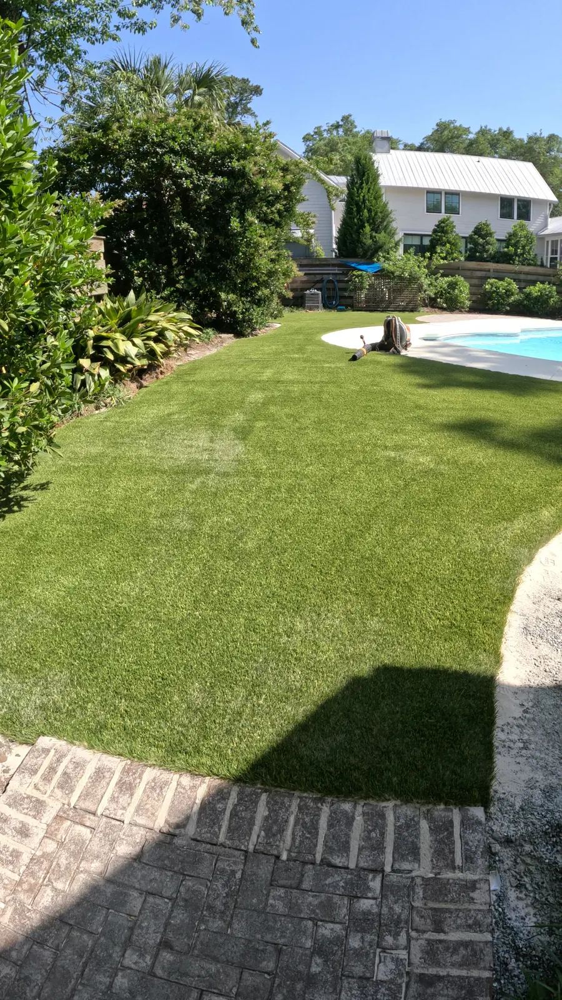
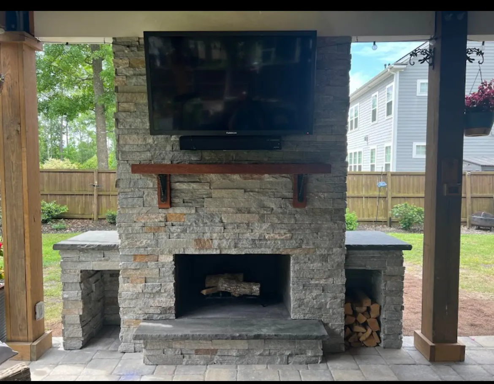
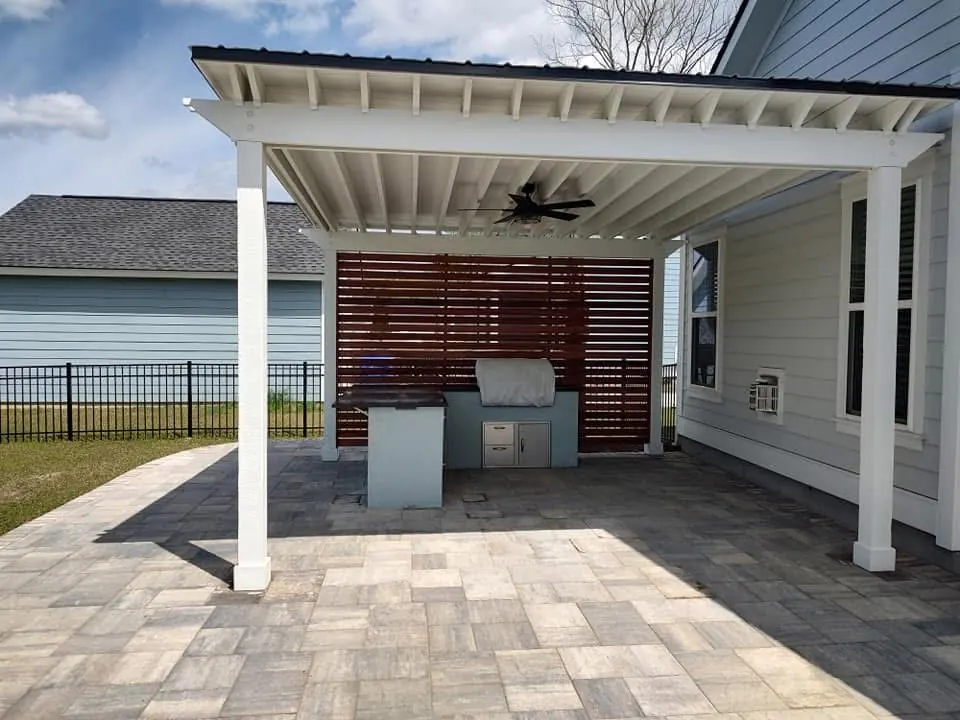

Landscape, Hardscape & Outdoor Living Services in Charleston, SC
What We Build
Custom Outdoor Spaces, Designed and Built by One Family
Cramers Landscaping designs and builds complete outdoor spaces across Charleston and the Lowcountry, from the plantings and drainage you walk past every day to the patios, pergolas and outdoor kitchens you gather in. Every project is designed around your home and how you live, and Doug and Zach Cramer are on the job from the first site visit to the final walkthrough.
How a Project Works
Every project runs the same way, wherever you live, and the people who design it are the people who build it. The full story is in How We Work: Design, Build and What Happens After.
Consultation at your home
Doug or Zach comes out in person, usually within a week of your call, to walk the property with you and ask how you want to use the space. The visit is free around Charleston, Mount Pleasant and Summerville. Farther out, meaning Kiawah, Seabrook, Wadmalaw, Awendaw or anywhere over an hour from Charleston or Summerville, the proposal trip is charged; that charge comes off the price if you build with us, and isn’t refunded if you don’t. Request a consultation.
A rough budget
Most people want a rough budget first, because they do not know what these things cost. It usually comes within a week of the consultation. There’s no point designing something you can’t afford. What Outdoor Living Costs in Charleston has real Charleston prices from our own projects, with what moves each number.
Design
Drawings matched to your home’s architecture, for the planting and for any structure. 3D renderings are an optional extra. Drawing takes one to four weeks, depending on the size of the job, and a larger project with a full drawn design has a design fee set by the job. Smaller jobs often still get a drawn design if one is needed, and if it is not extensive there is no charge for it.
HOA review and permits
Local reviews, like an HOA or a town board, fit in before the permit, and we can prepare and submit those applications for you. Structures like pergolas and pavilions need a permit, and getting one takes four to six weeks; an outdoor shower does not. Our Game Day Backyard in Nexton went through HOA review before we built it.
Build
Once the design is settled, you get an exact price. Most structures start one to two months after you sign, and we aim to fit a simple sod job in within a few weeks. A pergola, or a simple kitchen and pergola, takes 1 to 3 weeks to build, and a pavilion 6 to 8 weeks. Our own team handles the gas, electrical and plumbing.
After the build
Our workmanship and the plants are both warranted for a year. The plant warranty does not apply without an automatic watering system or to losses from weather. Plenty of yards are built in stages, and that is often the smart way to do it: our Fireside Retreat in Summerville went in that way, with the gas and water lines for the later stages run early.

01Landscape Design & Installation
Design and installation as one job: planting plans, sod and turf, irrigation, mulch and beds, plus the drainage and grading that keep a Lowcountry yard healthy through heavy rain. We design to suit the architecture of the house and to your budget, then our own crews build it.

02Hardscaping
Paver patios, walkways, retaining walls, fire pits, pool decks and concrete work. We put the effort in below the surface, with proper base preparation and drainage, so the finished work stays level, solid and good-looking long after it is installed.

03Outdoor Structures
Pergolas, pavilions, outdoor kitchens, fireplaces and outdoor showers. Gas, electrical, plumbing and permits are handled by our own team, and the proportions and detailing are drawn to suit your house rather than a catalog.
What Happens Before What
On a job with several trades, the order they work in matters, because a few things get expensive to change once something is built on top of them. We build every project with our own crews, so the whole sequence is ours to plan and nothing gets blamed on another trade.
The ground
Grading and drainage are settled before anything is planted or laid. Poor grading is what leaves a new lawn lumpy. Where a yard slopes toward the house we would rather regrade it, but on a yard with mature planting, a drainage system can save tearing that planting out.
What runs underneath
Conduit, gas and water for anything you might add later go in before a patio or walkway is laid over them. An empty conduit costs little on the day; adding one under a finished patio means cutting it up. The full list is on our landscape design and installation page.
Wiring during the build
If a structure or a patio is going in anyway, that is the time to run the lighting. We light the structures we build as part of building them, because retrofitting the wiring afterwards is far harder.
Room for the next stage
If an outdoor kitchen, a fireplace or a sink might come later, its gas and water lines are run while the framing is still open, so no finished wall or slab has to be cut to reach it. That is how the Fireside Retreat was built.
Water, then plants
Irrigation goes in before the planting it waters, and sod goes down on ground that has already been sprayed off, dug out and regraded.
Comparing Quotes
When another quote comes in lower, it is usually pricing something different, and most of the difference is in work you cannot see once the job is done. These are the questions worth asking, service by service.
- Concrete: how deep does the dig-out go? Forms made from 2x4s are only 3.5 inches tall, so a slab poured just to the bottom of the form comes out thinner than the 4 inches it should be.
- Retaining walls: is there rebar, and will the block be filled? Hollow block is weaker, and it leaves the cap too little surface to bond to.
- Patios and pool decks: what goes under the pavers, and how is it compacted? A patio fails through settling or roots, and around a pool the usual culprit is backfill that was never properly compacted.
- Pergolas and pavilions: are the roof, ceiling, post and beam trim and electrical included? Those are what separate a $10,000 pergola from a $30,000 one.
- Irrigation: how were the zones worked out? They should come from your water pressure and volume, and most of the systems we are called to fix were poorly designed.
- Lighting: are the transformer and timer in the price? Every system needs both.
- Sod: does the price include removing the old grass and regrading? Our $750 a pallet is the sod installed; the work before it is not included.
Projects We’ve Built
Real jobs, with the story of how each one came together.
Frequently Asked Questions
How long does a project take?
Most of the time comes before the build. The site visit is usually within a week of your call, and the rough budget within a week after that. Design takes 1 to 4 weeks, and a permit for a structure about 4 to 6 weeks. Structures usually start within 1 to 2 months of signing, depending on how busy we are and whether permits or HOA approval are still running. The build itself takes 1 to 3 weeks for a pergola and 6 to 8 weeks for a pavilion.
Do you take on smaller jobs?
Yes. Smaller jobs often still get a drawn design if one is needed, and if it is not extensive there is no charge for it. A few new plant beds typically run $1,000 to $2,000, and we aim to fit simple sod jobs in within a few weeks.
Can the work be done in stages?
Yes, and most yards are. Rushing is the one thing we push back on: we would sooner spread a project over a couple of years than build something you won’t love. The first stage is planned with the last in mind, so the lines for later work go in before anything is finished over them.
Do you handle permits and HOA approval?
Yes. We prepare and submit the applications, and HOA or town-board reviews come before the permit. Almost every structure needs a permit, which takes about 4 to 6 weeks, though some towns, like Isle of Palms, exempt small ones. Outdoor showers need no permit, and a retaining wall needs one once it reaches 6 feet from its lowest point.
Do you offer lawn maintenance?
No. We design and build landscapes, hardscapes and outdoor structures, and we don’t offer mowing or lawn maintenance. We don’t hydroseed either.
What does a project cost?
It depends on size, materials, the little details most people do not think of, and the expertise and craftsmanship that go into the build, which is why a rough budget comes before any design. As starting points, a pergola runs $10,000 to $30,000, a pavilion $30,000 to $90,000 or more, and patios about $18 a square foot. What Outdoor Living Costs in Charleston covers the rest, with what moves each number.
Not Sure Where to Start?
Tell us what you have in mind. Doug and Zach will visit your property, talk through your ideas and put together a design that fits your home, your budget and the way you live.